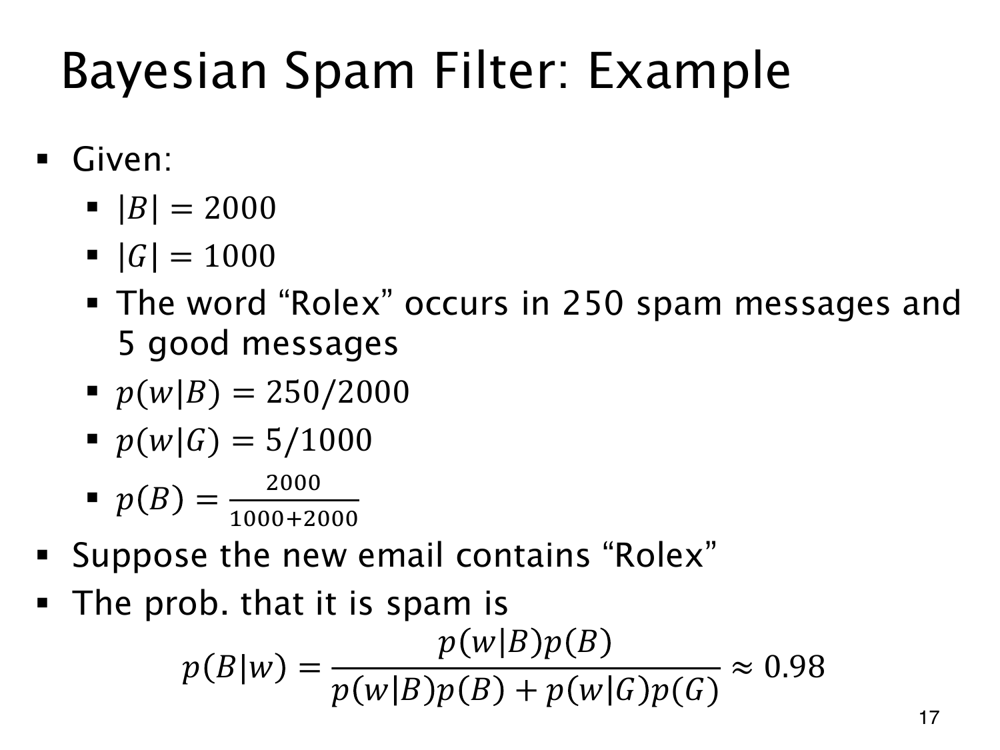

L1.10 · 第 17 页讲解原文
查看这一页课件

含 “Rolex” 的邮件
2000 封垃圾邮件中，250 封含 “Rolex”；1000 封正常邮件中，只有 5 封含这个词。用 w 表示含词事件，估计为
p(w∣B)=2000250=0.125,p(w∣G)=10005=0.005.
按同一训练集的类别比例取先验，p(B)=2/3、p(G)=1/3。新邮件含词时，
p(B∣w)=(250/2000)(2/3)+(5/1000)(1/3)(250/2000)(2/3)=255250≈0.980392.
该模型把约 67% 的先验提高到约 98%。这个词在垃圾邮件中出现得更频繁，因而支持垃圾邮件类别。
结果可以化成“含该词的垃圾邮件封数 / 含该词的全部邮件封数”，即 250/(250+5)，依赖于先验恰好来自同一批训练样本。换用别的先验，就不能直接这样约分。
p(w∣B)=12.5% 的分母是全部垃圾邮件，p(B∣w)≈98% 的分母则是全部含词邮件；两个条件方向回答的是不同问题。